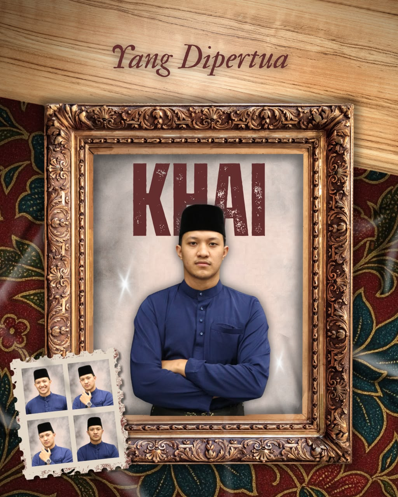
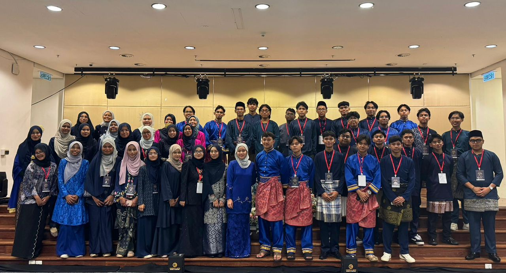
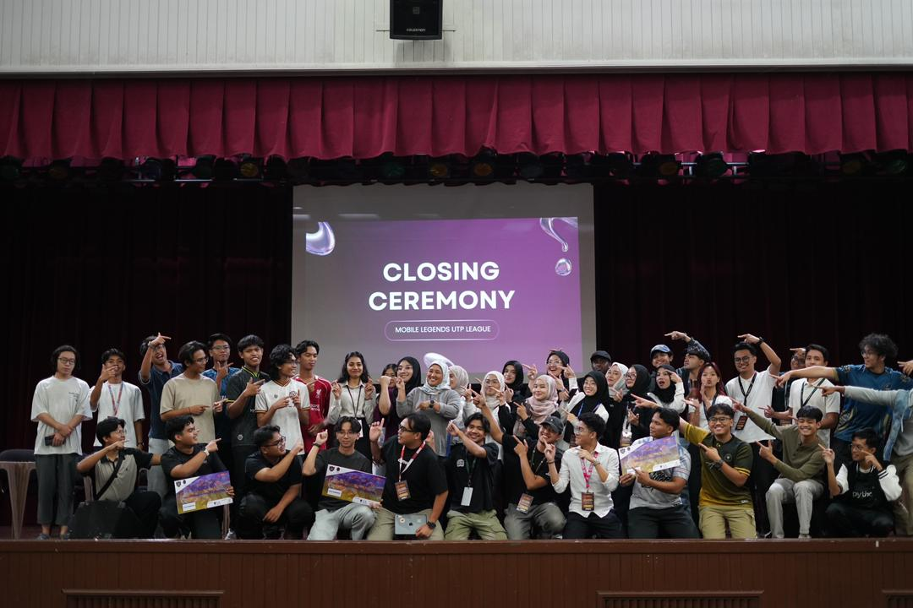
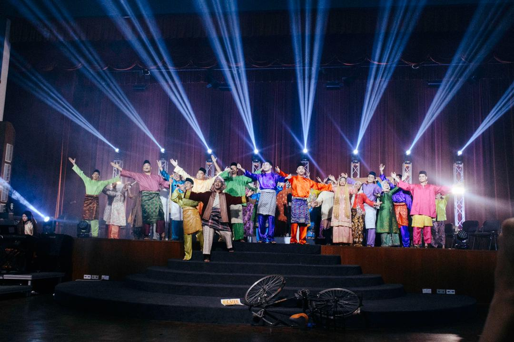
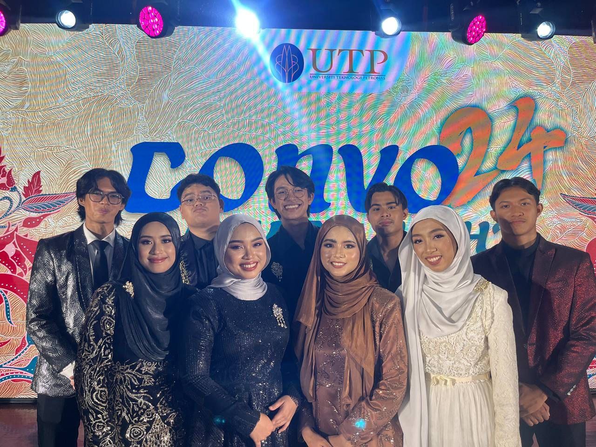
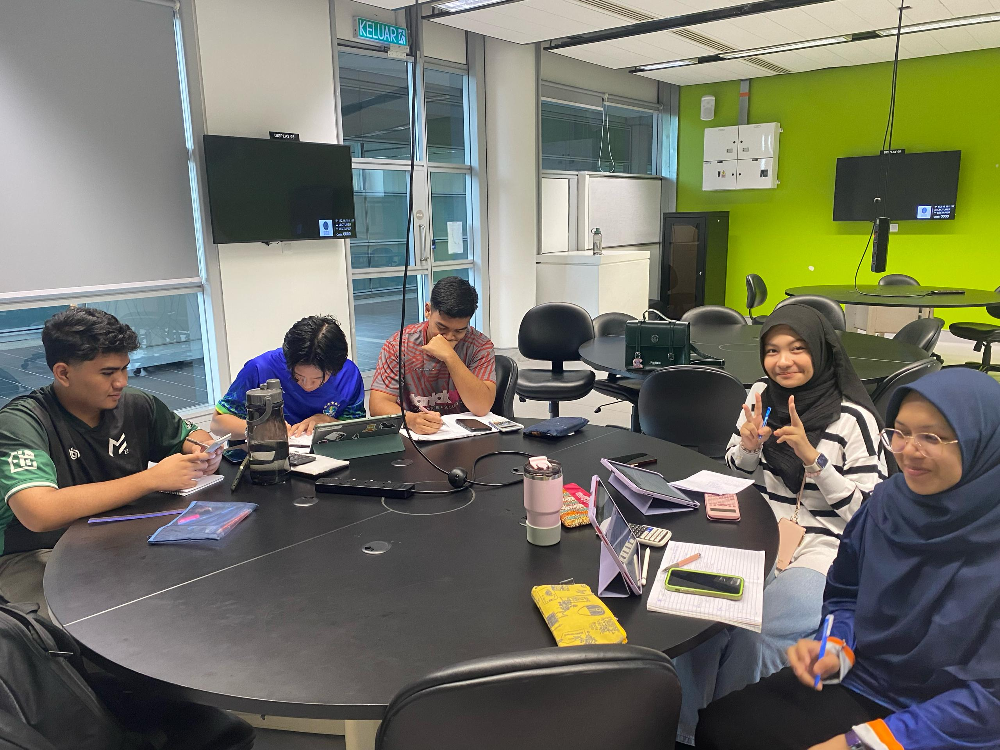

Aspiring Developer seeking an exciting internship opportunity.
View My WorkTechnical Skills: Proficient in web development, database management, and data visualization.
Project Experience: Developed web-based systems, including finance tracking dashboards and digital workflow solutions.
The Intersection: Combines a foundational knowledge of accounting and finance with technical skills to design data-driven, efficient business solutions.
Universiti Teknologi PETRONAS | Expected Graduation: August 2028
CGPA: 3.74 | Dean's List: 5 semesters
Relevant Coursework: Data Science, Statistical & Empirical Methods, Database Systems, Structured Programming, Business Accounting, Management Accounting, Object-Oriented Programming, Web Application & Integrative Programming, Software Engineering, Data Communication & Network.
Universiti Teknologi PETRONAS | September 2023 - August 2024
CGPA: 3.97 | Dean's List: 3 semesters
Relevant Coursework: Visual Programming, Problem Solving & Programming
SMKA Nurul Ittifaq | February 2017 - March 2022
Results: 11 A's (SPM 2021)
Programming Languages: Python, Java, C++, JavaScript, PHP, R, and SQL
Web Development: HTML, CSS, Node.js
Design Database & Data Tools:MySQL, MongoDB, SQLite, Microsoft Excel, Power BI, Tableau, Google Sheets
Development Tools: Visual Studio Code, Git, GitHub
Fundamentals: SDLC, Data Structures, Algorithms, Networking, Cybersecurity Fundamentals, Cloud Computing, IoT
Languages: Bahasa Melayu, English
May 2025 - August 2026

Founded and served as the first President of Citra Nusantara, UTP’s Malay poetry and literary arts club, establishing its identity, structure, and strategic direction.
Spearheaded the organisation of the annual “Sayembara Pantun Piala Mestika Embun”, positioning it as a flagship cultural event promoting traditional Malay literature and creative expression.
Forged strategic collaborations with national cultural bodies, including Dewan Bahasa dan Pustaka (DBP) and Jabatan Kebudayaan dan Kesenian Negara (JKKN), enhancing the club's credibility and outreach.
September 2025

Organised a 3-day national-level pantun competition (MESTIKA 2025) at UTP, engaging 10 teams from IPTA, IPTS, IPG, and polytechnics, to promote appreciation of Malay poetry, cultural heritage, and creative expression among students.
Collaborated with ACeFoS, DBP, and JKKN to elevate Malay language and culture , using a unique mystical theme to reconnect youth with traditional values while fostering cultural pride and preserving heritage in a modern context.
November 2025

Co-organised the Mobile Legends UTP League , creating a structured e-sports competition platform that fostered strategic thinking, teamwork, and sportsmanship among students across faculties.
Led planning and execution of the league , promoting student engagement beyond the classroom while highlighting e-sports as a medium for collaboration, creativity, and technological skill development.
May 2025

Performed in “Vinyl of Nusantara (VON) 2025” , a large-scale traditional music showcase at UTP Main Hall themed “Rhythm of Heritage”, celebrating cultural richness through live performance.
Collaborated with multidisciplinary performers including TTS actors, UPAG dancers, and PETRA musicians , delivering an immersive cultural experience that promoted appreciation of traditional performing arts.
May 2024

Performed in Convo Award Night 2024 , Selected as the sole musical act to deliver a high-profile intermezzo performance for an elite audience of university dignitaries, VIPs, and top-tier graduates. Maintained the event’s prestigious atmosphere and seamlessly transitioned the crowd between major academic award segments.
Jan 2025 – March 2025

• Selected as a Mathematics Tutor under the Tutor–Tutee Programme, mentoring foundation students based on strong academic performance in mathematics during foundation studies.
• Delivered academic support and guidance to junior students, strengthening their understanding of core mathematical concepts while contributing to a structured on-campus peer learning initiative.
• Tabung Amanah Zakat UTP (TAZU) Excellent Award
• 2nd Runner-up – Gema Pantun Piala Citra Puisi
• 2nd Runner-up – Sayembara Pantun Piala KESUMA
• 2nd Runner-up – Sayembara Pantun Teknologi Era Baharu
• Top 5 Best Pemantun – Sayembara Pantun Piala Mestika Embun 2026
An integrated e-commerce platform that pairs seamless online shopping features with an intuitive backend ledger system for efficient transaction management.
Tech Stack: Web Dev Fundamentals (HTML, CSS, JavaScript), Database/Backend
A data-driven Spotify tracker dashboard that analyzes user listening habits, tracks top tracks/artists, and visualizes music metrics in real-time.
Tech Stack: React/Python (or your choice), Spotify API, Data Visualization
A dynamic movie discovery website featuring detailed film listings, user-friendly search filters, and an immersive interface for media browsing.
Tech Stack: HTML, CSS, JavaScript, Movie API (e.g., TMDB)
I'm currently looking for internship opportunities. Let's connect!